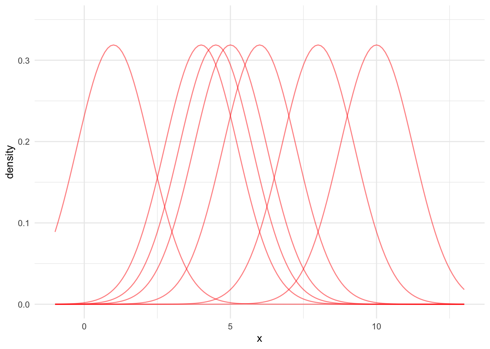

15 Nonparametric Curve Fitting
15.1 Review
- Statistical models serve three major purposes
- Summary
- Inference
- Prediction
- We adopted nonparametric techniques like KNN, decision trees, and random forests for making accurate predictions.
- In certain applications, these data-driven approaches work well.
15.2 Nonparametric Statistics
Parametric statistics requires the form of the population distribution to be completely specified except for a finite number of parameters.
For example, for a given analysis, an analyst could require/assume that the population be normally distributed. The normal distribution has two parameters: mean (\(\mu\)) and standard deviation (\(\sigma\)).
There are nonparametric tests for many common types of statistical inference. For example,
- 1-sample location parameter test (a non-parametric analog to a 1-sample t-test).
- 2-sample location parameter test (a non-parametric analog to a 2-sample t-test).
- K-sample location parameter test (a non-parametric analog to ANOVA).
- 2-sample scale parameter test (a non-parametric analog to a 2-sample F-test).
Nonparametric statistics can also be grouped by their statistical ideas.4 Many of these ideas are incredibly simple and could be, as my professor used to say, derived while sitting on the beach.
- Smoothing: Fitting curves without specifying the functional forms of the curves. This can be done in one dimension to estimate a probability distribution function and in multiple dimensions for estimating smoothed conditional means.
- Permutation: Exhaustively reconfigure the data to create a sampling distribution for a statistic.
- Bootstrap: Repeatedly sample from the data and calculate a statistic to create a sampling distribution for a statistic.
This set of notes focuses on techniques for estimating probability density functions (PDFs) with smoothing when the data don’t conform to common PDFs like the normal distribution or exponential distribution. The next set of notes will focus on the permutation and bootstrap for estimating sampling distributions (PDFs for statistics).
15.3 Estimating Probability Density Functions
So far, we’ve explored parametric techniques for estimating densities and probability density functions. We looked at data and fit common probability distributions with a finite number of parameters to the data. For instance, for a normal distribution the sufficient statistics or finite number of parameters are the mean and standard deviation. Unfortunately, common distributions may not fit the data.
In this section, we will look at data-driven nonparametric approaches to estimating probability density functions.
Suppose we have have a random sample of data \(x_1, x_2, ..., x_n\) for one variable and the data come from a population with a continuous probability density function. We represent the PDF as \(f_X(x)\). Our goal is to estimate \(f_X(x)\) with \(\hat{f_X}(x)\) using a data-driven approach and without specify a model or functional form.
We will discuss two approaches to this problem:
- Relative frequency histogram
- Kernel density estimators (KDEs)
We can use relative frequency histograms and KDEs to 1. visualize data and 2. generate new data with random sampling.
15.3.1 Relative Frequency Histograms
Relative frequency histograms are histograms normalized such that the bars sum to 1 that can be used to estimate PDFs.
Note: PDFs must integrate to 1.
The procedure for creating a relative frequency histogram is fairly simple:
- Partition the range of the data into \(k\) bins. The widths are called binwidths and typically the bins have equal binwidths.
- Count the number of observations in each bin.
- Divide the counts by n * binwidth to normalize the histogram
Let’s consider a formal definition from (Higgins 2004).
Partition the range of the data into bins such that \(a_1 < a_2 < ... < a_k\). Let \(a_{i + 1} - a_i\) be the binwidth. The density estimate for a value \(x\) in an interval \(a_i < x \le a_{i + 1}\) is
\[ \hat{f}(x) = \frac{\text{number of observations} \in (a_i, a_{i + 1}]}{n \cdot (a_{i + 1} - a_i)} \tag{15.1}\]
Example
Consider three random samples of sizes \(n = 40\), \(n = 100\), and \(n = 10,000\) from standard normal distribution. In the code below, we store these samples in an a tibble with two columns, one for the name of the sample set and one for the observation in the sample.
Let’s use library(ggplot2) and the after_stat() function to create relative frequency histograms for the three random samples. Remember, the relative frequency histograms are \(\hat{f}(x)\).
In this example, we know \(f_X(x)\). It is the PDF for \(X \sim N(\mu = 0, \sigma = 1)\). Next, superimpose the known PDF on top of \(\hat{f_X}(x)\).
data |>
ggplot(aes(x)) +
geom_histogram(aes(y = after_stat(density))) +
stat_function(fun = dnorm, color = "red", args = list(mean = 0, sd = 1)) +
facet_wrap(~ set)`stat_bin()` using `bins = 30`. Pick better value with `binwidth`.Number of Bins and Binwidth
Histograms and relative frequency histograms are very sensitive to the selection of binwidths. geom_histogram() defaults to 30 bins, but this can be overridden with the binwidth and bins arguments.
Several papers have developed rules for determining the number of bins or binwidth including Scott and Sain (2005).
An important takeaway is that increasing \(k\), the number of bins, can lead to noisier bars but more precision in the estimate, while decreasing \(k\) results in less noisy bars but imprecise estimates. Figure 15.2 recreates Figure 15.1 with fewer bins.
data |>
ggplot(aes(x)) +
geom_histogram(aes(y = after_stat(density)), bins = 10) +
stat_function(fun = dnorm, color = "red", args = list(mean = 0, sd = 1)) +
facet_wrap(~ set)15.3.2 Kernel Density Estimation
We will introduce kernel density estimators by considering two related concepts.
Concept #1
We were able to simplify and fit complex PDFs using mixture distributions. In fact, as \(k\), the number of mixtures in the mixture distribution increased, we were able to fit increasingly complex probability distributions. Unfortunately, this process created overparameterized models.
Kernel density estimation, a nonparametric approach for estimating PDFs, takes a slightly different approach. It places a simple PDF (called a kernel) at every data point in the data and then combines these simple PDFs into a complex PDF. We no longer need to estimate many parameters and specify the number of clusters, but the KDE is computationally expensive and requires storing all of the original data.
Concept #2
Relative frequency histograms have a couple of issues:
- They are very sensitive to binwidths
- They are not smooth
Kernel Density Estimators are weighted relative frequencies of the number of values near some value. The counts are normalized so the entire KDE integrates to 1. KDEs are a data-driven method for estimating PDFs.
Kernel density estimators are smoothed histograms. Fundamentally, they use a weighted average of data points near \(x_0\) to generate \(\hat{f}(x_0)\). Here, \(x_0\) is the point where we are estimating the probability density.
A kernel is a weighting function that maps real values to real positive values. Kernels typically integrate to 1 and are symmetric.
Under this definition, kernels are PDFs like the normal density function and uniform density function.
Visual KDE Process
Kernel density estimation is a data-driven approach to fitting non-parametric PDFs. Let’s walk through a visual demonstration of a KDE where x = c(1, 4, 4.5, 5, 6, 8, 10).
- Pick a kernel type (normal, triangle, uniform)
- Add kernels centered at every observation with a specified bandwidth
- Divide each kernel by \(n\) so the distribution is normalized
- To find the KDE at value \(x_0\), sum the normalized kernels at \(x_0\)
First, we need to pick a kernel. We will mostly use normal kernels, but there are many potential kernels including the triangular kernel and uniform kernel. Figure 15.3 shows the PDFs for a few kernels.
Code
tibble(x = 0) |>
ggplot() +
stat_function(fun = dnorm, color = "red", args = list(mean = 0, sd = 1)) +
scale_x_continuous(limits = c(-3, 3)) +
scale_y_continuous(limits = c(0, 0.6))
tibble(x = 0) |>
ggplot() +
stat_function(fun = dunif, color = "red", args = list(min = -0.5, max = 0.5)) +
scale_x_continuous(limits = c(-3, 3)) +
scale_y_continuous(limits = c(0, 1.2))
tibble(x = seq(-3, 3, 0.1)) |>
mutate(d = 1 - abs(x)) |>
mutate(d = pmax(d, 0)) |>
ggplot() +
geom_line(aes(x, d), color = "red") +
scale_x_continuous(limits = c(-3, 3)) +
scale_y_continuous(limits = c(0, 1.2))Second, we add kernels centered at every observation with a specified bandwidth. Figure 15.4 shows seven normal PDFs centered at our example data points.
For the sake of simplicity and demonstration, we’ll typically use default bandwidths. Think of bandwidths like binwidths for the relative frequency histograms we discussed in Section 15.3.1.2. Using smaller bandwidths leads to noisier KDEs but more precision. Increasing the bandwidth leads to smoother KDEs but less precision. The KDE Wikipedia page provides a more in depth discussion of bandwidth selection.
Code
data <- expand_grid(
x = c(1, 4, 4.5, 5, 6, 8, 10),
grid = seq(-1, 13, 0.1)
)
data_simple <- distinct(data, x)
bw <- stats::bw.nrd0(data_simple$x)
data <- data |>
mutate(density = dnorm(x = grid, mean = x, sd = bw))
data |>
ggplot() +
geom_line(
data = data,
aes(x = grid, y = density, group = factor(x)),
alpha = 0.5,
color = "red"
) +
scale_y_continuous(limits = c(0, 0.35)) +
labs(
x = "x"
)
Third, we need to adjust these normal PDFs so the KDE integrates to 1. Otherwise, the KDE will not be a PDF. To do this, simply divide each PDF by the number of data points. Figure 15.5 shows each kernel divided by 7.
Code
data <- expand_grid(
x = c(1, 4, 4.5, 5, 6, 8, 10),
grid = seq(-1, 13, 0.1)
)
data_simple <- distinct(data, x)
bw <- stats::bw.nrd0(data_simple$x)
data <- data |>
mutate(density = dnorm(x = grid, mean = x, sd = bw) / nrow(data_simple))
data |>
ggplot() +
geom_line(
data = data,
aes(x = grid, y = density, group = factor(x)),
alpha = 0.5,
color = "red"
) +
scale_y_continuous(limits = c(0, 0.35)) +
labs(
x = "x"
)Finally, for any observation \(x_0\), sum up the red lines. This sum is the KDE at point \(x_0\).
Typically, we calculate the KDE for many values of \(x_0\) (e.g. a sequence from -2 to 15 by increments of 0.1) and then visualize the result. The black line in Figure 15.6 is the estimated KDE across the range of the data.
Code
data <- expand_grid(
x = c(1, 4, 4.5, 5, 6, 8, 10),
grid = seq(-1, 13, 0.1)
)
data_simple <- distinct(data, x)
bw <- stats::bw.nrd0(data_simple$x)
data <- data |>
mutate(density = dnorm(x = grid, mean = x, sd = bw) / nrow(data_simple))
kde_x0 <- tibble(
x0 = density(x = data_simple$x, n = 10000)$x,
f_hat_x0 = density(x = data_simple$x, n = 10000)$y
) |>
slice_min(abs(x0 - 4))
kde_plot <- data |>
ggplot() +
geom_line(
data = data,
aes(x = grid, y = density, group = factor(x)),
alpha = 0.5,
color = "red"
) +
geom_density(
data = data_simple,
aes(x = x)
) +
geom_point(
data = kde_x0,
aes(x = x0, y = f_hat_x0)
) +
geom_segment(
data = kde_x0,
aes(x = 4, y = 0, xend = 4, yend = f_hat_x0),
linetype = "dashed"
) +
annotate("text", x = 3, y = 0.15,
label = "hat(f)(x[0])", parse = TRUE) +
scale_y_continuous(limits = c(0, 0.35)) +
labs(
x = "x"
)
kde_plot
Mathematical KDE Process
- Pick a kernel type (normal, triangle, uniform)
- Pick a bandwidth
- Add kernels centered at every observation
- Divide each kernel by \(n\) so the distribution is normalized
- To find the KDE at value \(x_0\), sum the normalized kernels at \(x_0\)
Let \(w(z)\) be a kernel (symmetric probability density function) centered at \(z\). This kernel can give more weight to observations near \(z\) and less weight to observations far from \(z\).
Suppose we use a normal kernel and one data point \(x_i\). \(\mu = 0\) because the kernel is centered at \(z\). We’ll always use \(\sigma = 1\). If we assume \(x_0 = x_i\), then our weighting function is \(W(x_0) = \frac{1} {\sqrt{2\pi}} exp(-\frac{x_0^2}{2})\).
When we evaluate the KDE at point \(x_0\), \(x_0 = x_i\) won’t necessarily be true. So we will need to shift our weighting function. We simply need to modify our function to be \(W(x_0 - x_i) = \frac{1} {\sqrt{2\pi}} exp(-\frac{(x_0 - x_i)^2}{2})\).5
We may also want to adjust the widths of our kernels. When using the normal kernel, we leave \(\sigma = 1\) and adjust the bandwidth. The bandwidth controls the weight given to points near \(x_0\) when estimating the density. Bandwidths are like binwidths in relative frequency histograms. If \(\triangle\) is the bandwidth, then our weighting function is \(W(\frac{x_0 -x_i}{\triangle})\).
Recall that a kernel must integrate to 1. Because \(\triangle\) changes the shape of the curve, and therefore the area under the curve, we must account for that by dividing the curve by \(\triangle\). This makes our weight function \(\frac{1}{\triangle} W(\frac{x - x_i}{\triangle})\). Note that as \(\triangle\) increases, the PDF curves become wider with less density at any given point.
We now have a building block \(\frac{1}{\triangle} W(\frac{x-x_i}{\triangle})\). Let’s finally relax our assumption that we have one observation and assume we have \(n\) values of \(x_i\).We can take the summation of \(n\) of these distributions to create a kernel density estimate. Again, because the KDE must integrate to 1, we must divide the function by \(n\).
Thus, the kernel density estimate (KDE) is
\[ \hat{f}(x_0) = \frac{1}{n\triangle} \sum_{i = 1}^n w\left(\frac{x_0 - x_i}{\triangle}\right) \tag{15.2}\]
Based on Equation 15.2, we need to pick a weighting function (\(W(z)\)) and a bandwidth (\(\triangle\)). We will almost always use the normal distribution and bw.nrd0 bandwidth.6 This means we can define a much simpler process:
- Place a normal distribution on each observation in the data with a bandwidth determined by
bw.nrd0 - Divide each kernel by \(n\) so the distribution is normalized
- To find the KDE at value \(x_0\), sum the normalized kernels at \(x_0\)
KDE’s in R
There are several ways to use kernel density estimators in R. We will explore geom_density() and density().
The use of geom_density() is nearly identical to geom_histogram(). The function has a bw argument to change the bandwidth and a kernel argument to change the kernel.
data <- expand_grid(
x = c(1, 4, 4.5, 5, 6, 8, 10)
)
data |>
ggplot(aes(x = x)) +
geom_density()
data |>
ggplot(aes(x = x)) +
geom_density(kernel = "triangular")This blog post offers a good walkthrough of the KDE process in plain language.
15.4 Nonparametric Curve Smoothing
We now move to bivariate data where we have \(x_1, x_2, ..., x_n\) and \(y_1, y_2, ..., y_n\). Our goal is to flexibly estimate \(f(x)\) with \(\hat{f}(x)\).7
\(\hat{f}(x)\) is an estimate of the conditional mean \(E\left[Y|X=x\right]\). Recall that linear regression is a parametric approach, with a finite number of parameters, for estimating this conditional mean. When we plug in a specific value, \(x_0\), we get back the conditional mean for \(y\) at the specific value \(x_0\).
We’re focused on nonparametric approaches to estimate \(E\left[Y|X=x\right]\). We want to make a minimal number of assumptions and we don’t want to specify a functional form. This is a very data-driven approach, which is advantageous when the data follow a clear pattern but the functional form isn’t easy to specify with just main effects or low-order polynomials.
15.4.1 Approaches
There are three major nonparametric approaches to curve smoothing.
- Kernel methods. Kernel methods are related to kernel density estimation for estimating probability density functions. Here, we need to estimate the joint PDF \(f_{X,Y}(x, y)\) and the marginal PDF \(f_X(x)\). Next, integrate out \(f_X(x)\) to approximate \(E\left[Y|X=x\right]\). This approach can be highly biased in the tails of \(x\) and in sparse regions of \(x\).(Hastie, Tibshirani, and Friedman 2009)
- Regression splines. Regression splines break \(x\) into ordered regions and then fit \(\hat{f}(x)\) as a series of piece-wise low-order polynomial regressions. Special conditions ensure that \(\hat{f}(x)\) is continuous where splines meet.
- Local linear regression and locally estimated scatter plot smoothing (LOESS). These methods use weighted linear regression estimated on observations near \(x_0\), where \(x_0\) is a specific point in the domain where we want to estimate \(\hat{f}\)
15.4.2 K-Nearest Neighbors
K-Nearest Neighbors (KNN) average is an estimate of the regression function/conditional mean \(E\left[Y|X=x\right]\).
Let \(N_k(x_0)\) be the \(k\) closest observations to \(x_0\). Closeness is often measured with Euclidean distance. Let \(Ave\) denote the mean. Then
\[ \hat{f}(x_0) = Ave\left(y_i | x_i \in N_k(x_0)\right) \tag{15.3}\]
is an estimate of the conditional mean of \(y\) at point \(x_0\).
Consider an example with simulated data.
Code
library(tidymodels)
# create a recipe
knn_rec <-
recipe(formula = y ~ x, data = data1)
# create a knn model specification
knn_mod <-
nearest_neighbor(neighbors = 3) |>
set_engine(engine = "kknn") |>
set_mode(mode = "regression")
# create a workflow
knn_wf <-
workflow() |>
add_recipe(knn_rec) |>
add_model(knn_mod)
# fit the knn model specification on the training data
knn_fit <- knn_wf |>
fit(data = data1)
predictions_grid <- tibble(
x = seq(0, 10, 0.1),
predict(object = knn_fit, new_data = tibble(x = seq(0, 10, 0.1)))
)
# visualize the data
ggplot() +
geom_point(data = data1, aes(x = x, y = y), alpha = 0.25) +
geom_path(data = predictions_grid, aes(x = x, y = .pred), color = "red") +
labs(
title = "Example 1",
subtitle = "Training Data with Predictions"
)
KNN Average has a couple of issues.
- \(\hat{f}(x)\) is often a discontinuous stepwise function.
- All observations in \(N_k(x_0)\) are given the same weight even though some values are nearer to \(x_0\) than other values.
15.4.3 Local Linear Regression and LOESS
Local linear regression fits a separate weighted linear regression model for each \(x_0\) on a subset of the data. Only the closest observations are used. LOESS, a specific local linear regression model, is a curve smoothing approach for data visualization.
The conditional mean for LOESS is a fairly simple weighted linear regression model.
\[ \hat{f}(x_0) = \hat{l}(x_0) \]
All we need to do is calculate weights for the weighted linear regression. Span, the \(k\) closest observations considered for each linear regression model is the only hyperparameter for LOESS. We will use the tricube weight function using the following procedure:
- Calculate the distance from \(x_0\) to all observations in the data.
- Pick the \(k\) closest values.
- Divide all chosen distances by the maximum distance so that all distances are in \([0, 1]\).
- Apply the tricube function, \((1 - u ^ 3) ^ 3\) to the scaled distances.
Once the weights are calculated, simply plug them into a linear regression model using the \(k\) closest observations to \(x_0\).
Let’s look at the math that explains the algorithm. The LOESS conditional mean uses weighted least squares to find \(\hat{l}(x_0)\) that minimizes
\[ \sum_{x_i \in N_k(x_o)} \left[y_i - l(x_i)\right]^2W\left(\frac{|x_0 - x_i|}{\triangle_{x_o}}\right) \]
- \(x_i \in N_k(x_o)\) is the \(k\) closest observations to \(x_0\)
- \(l(x_i)\) is a weighted linear regression model
- \(|x_0 - x_i|\) is a vector of distances
- \(\triangle_{x_o}\) is the maximum distance in the vector \(|x_0 - x_i|\)
- \(W()\) is a kernel
Figure 15.10 demonstrates LOESS on simulated data.
Code
tricube <- function(u) {
(1 - u ^ 3) ^ 3
}
distance <- function(x, x0, k) {
distances <- abs(x - x0)
sorted_distances <- distances |>
sort()
ids <- which(distances <= max(sorted_distances[1:k]))
chosen_distances <- distances[ids]
scaled_distances <- chosen_distances / max(chosen_distances)
list(
scaled_distances = scaled_distances,
ids = ids
)
}
my_loess <- function(data, k, x0) {
distances <- distance(x = data$x, x0 = x0, k = k)
weights <- tricube(u = distances$scaled_distances)
fit <- lm(y ~ x, data[distances$ids, ], weights = weights)
# return coefficient
list(
coefficient = coef(fit),
y_0 = predict(fit, newdata = tibble(x = x0))
)
}
points <- tibble(
x = c(2, 4, 8),
y = map_dbl(x, ~my_loess(data1, k = 10, x0 = .x)$y_0)
)
line2 <- tibble(
x = seq(0, 4, 0.1),
y = map_dbl(x, ~sum(c(1, .x) * my_loess(data1, k = 10, x0 = 2)$coefficient))
)
line4 <- tibble(
x = seq(2, 6, 0.1),
y = map_dbl(x, ~sum(c(1, .x) * my_loess(data1, k = 10, x0 = 4)$coefficient))
)
line8 <- tibble(
x = seq(6, 10, 0.1),
y = map_dbl(x, ~sum(c(1, .x) * my_loess(data1, k = 10, x0 = 8)$coefficient))
)
data1 |>
ggplot(aes(x, y)) +
geom_point() +
geom_smooth(method = "loess", span = 0.1, method.args = list(degree = 1, surface = "direct"), se = FALSE) +
geom_point(
data = points,
aes(x, y),
color = "red"
) +
geom_line(data = line2, aes(x, y), linetype = 2) +
geom_line(data = line4, aes(x, y), linetype = 2) +
geom_line(data = line8, aes(x, y), linetype = 2)In general, LOESS is very poor for extrapolating beyond the range of \(x\) and even in places where data are sparse. In practice, local linear regression models and LOESS are mostly used for visualizing trends in scatter plots using a smoothed conditional mean line.
15.4.4 Code
geom_smooth()
LOESS is not limited to simple linear regression models. For example, geom_smooth() includes a 2nd-order polynomial for each local regression model by default. Let’s fit a
`geom_smooth()` using method = 'loess' and formula = 'y ~ x'`geom_smooth()` using method = 'loess' and formula = 'y ~ x'
`geom_smooth()` using formula = 'y ~ x'loess()
loess() can be used to fit a local linear regression model. It contains many arguments than be used to fine-tune the fit include span, degree, and surface.
Call:
loess(formula = y ~ x, data = data1, degree = 1)
Number of Observations: 100
Equivalent Number of Parameters: 2.76
Residual Standard Error: 5.446 Once we have a LOESS object, we can use predict() to calculate the conditional mean.
LOESS is nonparametric and fits a new model for each unique \(x_0\). LOESS is memory-based meaning that almost all computation is done when predict() is run. This is computationally expensive and LOESS will not work well with large data sets.
R.A. Fisher, a key developer of frequentist statistics, developed an early nonparametric test called Fisher’s Exact Test. The use of nonparametric statistics has increased with swelling computing power.↩︎
A location parameter controls the horizontal shift of a distribution. Location parameters include the mean, median, and mode.↩︎
A scale parameter controls the spread of a distribution. Scale parameters include variance and standard deviation.↩︎
Methods based on binomial distribution are also common but we will skip them.↩︎
Recall your algebra class where, to move the vertex of a parabola in the x-axis some distance \(h\), you updated the formula \(y = x^2\) to \(y = (x-h)^2\). The change to the normal function is analogous. In fact, we can use this idea to shift any kernel.↩︎
\(\text{bandwidth} = 0.9 min\left(\hat{\sigma}, \frac{IQR}{1.34}\right)\)↩︎
Note that \(f_x(x)\) above meant a probability density function. In this case, \(f(x)\) is a function that relates \(y_1, y_2, ..., y_n\) to \(x_1, x_2, ..., x_n\).↩︎